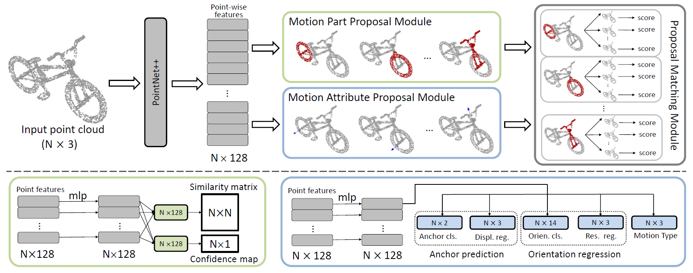
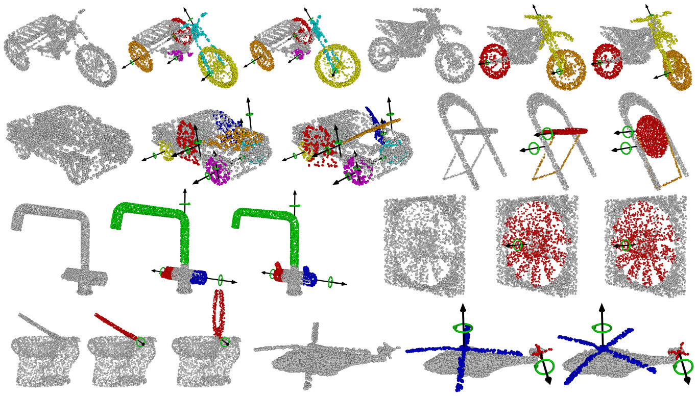

|
Shape2Motion: Joint Analysis of Motion Parts and Attributes from 3D Shapes
(Kai is corresponding author.) 
Abstract: For the task of mobility analysis of 3D shapes, we propose
joint analysis for simultaneous motion part segmentation
and motion attribute estimation, taking a single 3D
model as input. The problem is significantly different from
those tackled in the existing works which assume the availability
of either a pre-existing shape segmentation or multiple
3D models in different motion states. To that end, we develop
Shape2Motion which takes a single 3D point cloud as
input, and jointly computes a mobility-oriented segmentation
and the associated motion attributes. Shape2Motion is
comprised of two deep neural networks designed for mobility
proposal generation and mobility optimization, respectively.
The key contribution of these networks is the novel
motion-driven features and losses used in both motion part
segmentation and motion attribute estimation. This is based
on the observation that the movement of a functional part
preserves the shape structure. We evaluate Shape2Motion
with a newly proposed benchmark for mobility analysis of
3D shapes. Results demonstrate that our method achieves
the state-of-the-art performance both in terms of motion
part segmentation and motion attribute estimation.

Visual results of mobility analysis. For each example, we show from left to right the input point cloud, the extracted
mobilities (motion parts and motion axes) and the point cloud with motion parts moved according to detected mobility.
|